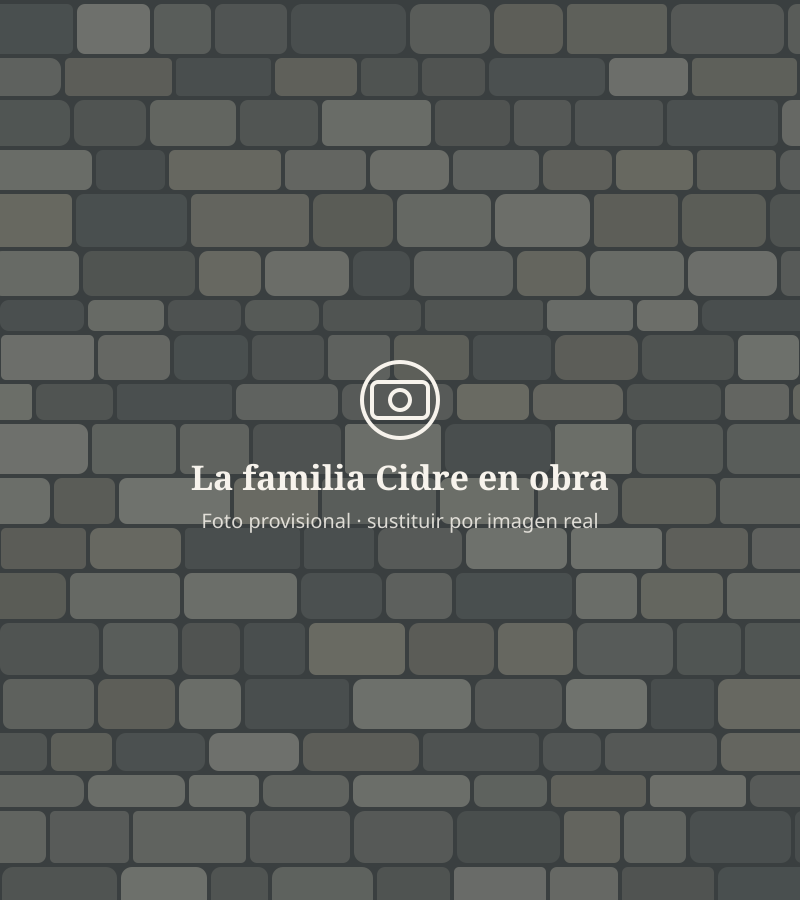

Empresa familiar · Escairón, O Saviñao
Albañilería, reformas y rehabilitación en Escairón, Monforte de Lemos y toda la Ribeira Sacra. Más de 30 años cuidando las casas de nuestros vecinos.
Visita y presupuesto sin compromiso en toda la comarca
+30 años de oficio
Empresa familiar
Presupuesto gratis
Escairón – Monforte
Qué hacemos
Desde un pequeño arreglo hasta una casa nueva. Trabajamos con materiales de la zona y con el cuidado de quien trabaja para sus vecinos.
Cocinas, baños y viviendas completas. Nos encargamos de todo para que tú solo tengas que elegir cómo la quieres.
Devolvemos la vida a casas de piedra, pajares y muros tradicionales respetando su carácter.
Viviendas, garajes, almacenes y ampliaciones, desde la cimentación hasta el remate final.
Cubiertas que aguantan el invierno gallego y exteriores pensados para durar.
Un trabajo que hacemos con especial respeto y discreción, acompañando a cada familia.
Ningún trabajo es pequeño: humedades, grietas, chimeneas, escaleras o ese arreglo que llevas tiempo dejando.
Nuestro trabajo
Algunas de las obras que hemos hecho en la comarca. Pulsa en cada foto para verla en grande.

Quiénes somos
Construcciones y Reformas Cidre es una empresa familiar de O Saviñao. Desde 1995 levantamos muros, tejados y casas en Escairón, Monforte de Lemos y los pueblos de alrededor, con un oficio que ha pasado de padres a hijos.
Conocemos la piedra de la Ribeira Sacra, el clima de aquí y las casas de aquí. Por eso cada obra la hacemos como si fuese para nosotros: bien hecha, limpia y a tiempo.
«Aquí todo el mundo se conoce. Nuestra mejor publicidad es un vecino contento.»
Sin complicaciones
1
Por teléfono o WhatsApp, nos cuentas qué necesitas.
2
Vamos a verla sin compromiso y te asesoramos.
3
Te damos un precio claro y cerrado, por escrito.
4
Trabajamos en plazo y te entregamos todo limpio.
Dónde trabajamos
Tenemos la base en Escairón (O Saviñao) y trabajamos en un radio de unos 25 km: Monforte de Lemos, Chantada, Pantón, Sober, Taboada y el resto de la Ribeira Sacra.
¿Tu pueblo no aparece? Pregúntanos igualmente.
Hablemos
Cuéntanos qué necesitas y te respondemos lo antes posible. La visita y el presupuesto son gratuitos.
Mándanos unas fotos por WhatsApp de lo que quieres hacer y te orientamos sobre el trabajo y el precio aproximado. Después pasamos a verlo sin ningún compromiso.
Construcciones y Reformas Cidre
Albañilería, reformas y rehabilitación · Escairón (O Saviñao), Lugo
680 546 523 · info@construccionescidre.es
© 2026 Construcciones y Reformas Cidre